This project develops a comprehensive machine learning solution for predicting average viewer ratings of popular TV shows using from The Movie Database (TMDB). The work was developed as part of an interview process, demonstrating end-to-end data science capabilities from exploration through deployment. Working with a dataset of 10,000 TV shows, the project addresses the prediction challenge through both classification and regression approaches, providing insights into what factors influence TV show ratings. The entire project was completed in 5 days (starting December 26th, 2024) to deliver before New Year's Eve, as evidenced by the GitHub repository commit history.
The dataset originally contained 16 features including show metadata, popularity metrics, genre information, and viewer ratings. Through extensive exploratory data analysis and feature engineering, these were transformed into a refined set of predictive features including popularity scores, vote counts, release years, genre clusters, continental origins, and language macro-areas.
The dual approach of treating the prediction as both a classification problem (predicting rating categories 0-10) and a regression problem (predicting continuous rating values) allows for comprehensive model evaluation and comparison. The project demonstrates the complete machine learning pipeline from data exploration through model deployment, including advanced techniques like outlier detection ensemble methods, custom clustering for dimensionality reduction, and explainable AI for model interpretability.
This project provided extensive hands-on experience with the complete data science workflow and involved working on several critical areas:
Feature Engineering and Domain Knowledge: I transformed raw categorical data into meaningful features through creative approaches. The genre clustering exercise, where I reduced 35 distinct genres to 6 clusters using multiple algorithms (K-Means, Hierarchical, DBSCAN) and evaluation metrics (Silhouette, Davies-Bouldin, Calinski-Harabasz), required balancing dimensionality reduction with information preservation. Mapping languages to macro-areas and countries to continents demonstrated the importance of domain knowledge in feature creation.
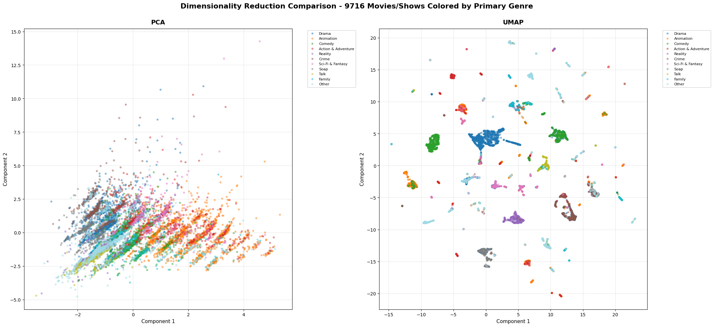
Handling Imbalanced Data: The project presented a significant challenge with highly imbalanced target classes. I explored various techniques including SMOTE for oversampling minority classes, random undersampling for majority classes, and combined approaches. This taught me that sometimes the "obvious" solution (balancing classes) doesn't always yield better results—the unbalanced dataset actually performed better in this case, highlighting the importance of empirical testing over assumptions.
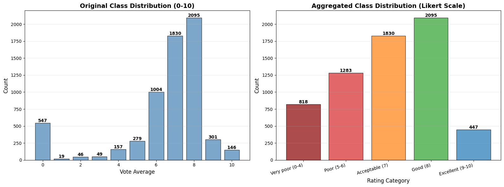
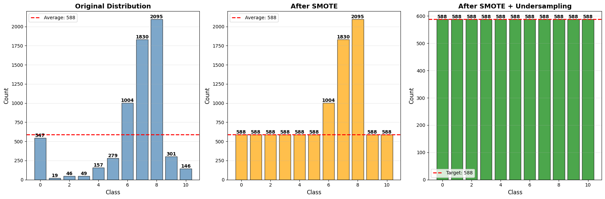
Outlier Detection Ensemble Methods: Rather than relying on a single outlier detection technique, I implemented an ensemble approach testing 13 different methods (Z-Score variants, IQR, Isolation Forest, LOF, KNN, DBSCAN). By requiring consensus across multiple methods (threshold of 9+ methods agreeing), I created more robust outlier detection that reduces false positives while maintaining effectiveness. This ensemble thinking is applicable beyond just outlier detection.
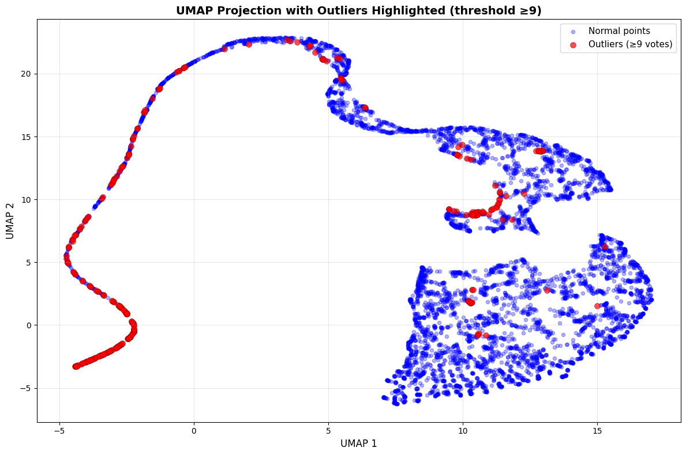
Model Selection and Hyperparameter Tuning: Working with multiple model families (tree-based: Random Forest, AdaBoost, Gradient Boosting, LightGBM, XGBoost, CatBoost; linear: Logistic/Ridge/Lasso Regression; probabilistic: Naive Bayes; instance-based: SVM, KNN) demonstrated how different algorithms have different strengths. The systematic grid search with cross-validation (k=5 initially, then k=10 for fine-tuning) showed the importance of methodical experimentation. I learned that gradient boosting methods (especially LightGBM and CatBoost) excel at tabular data with mixed feature types.
Evaluation Metrics for Different Problems: For classification, I looked beyond simple accuracy, using precision, recall, F1-score, balanced accuracy, and ROC-AUC to get a complete picture, especially with imbalanced classes. For regression, understanding the differences between MSE, RMSE, MAE, R², and MAPE helped me evaluate model performance from multiple perspectives. The MAPE of 16.71% for the final regressor provided an interpretable measure of average prediction error.
Explainable AI (XAI) Techniques: Implementing both LIME (Local Interpretable Model-agnostic Explanations) and SHAP (SHapley Additive exPlanations) was crucial for model interpretability. Discovering that vote_count was overwhelmingly the most important feature for regression made intuitive sense—polarizing shows get more reviews. The XAI analysis for different rating classes revealed interesting patterns, like European origin being a strong predictor for rating 0, suggesting regional biases in lower-rated content.
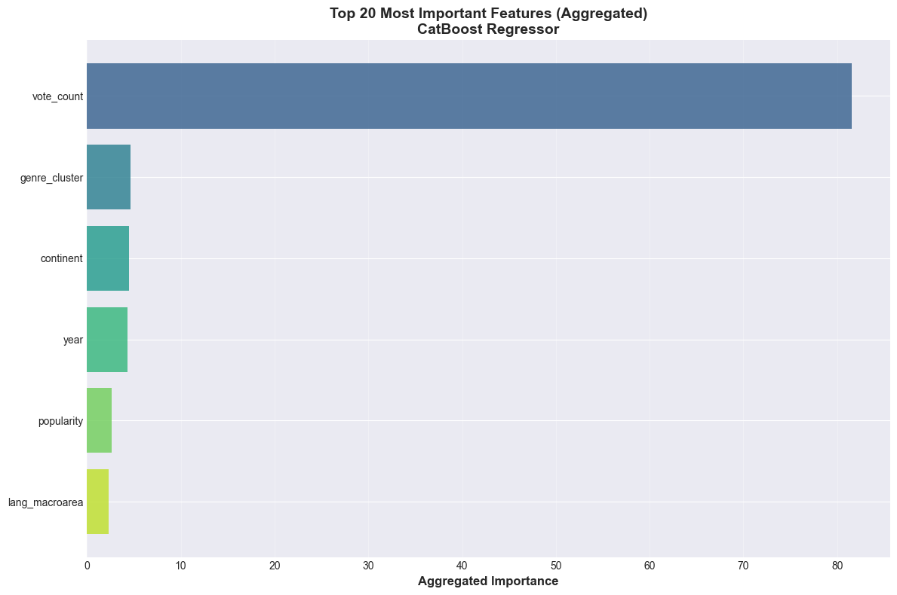
Text Classification with Transformers: The extra work with DistilBERT for sequence classification using show names and overviews introduced modern NLP techniques. While the model achieved decent metrics (42% accuracy), the class distribution analysis revealed it primarily predicted the majority classes (ratings 7-8), highlighting the challenges of applying deep learning to imbalanced datasets without extensive fine-tuning or data augmentation.
Importance of Data Preprocessing: The project reinforced that data preprocessing often takes more time than modeling but is equally crucial. From API calls to fetch genre mappings, to creating geographical and linguistic groupings, to testing multiple scaling methods (StandardScaler proved optimal over MinMaxScaler, RobustScaler, PowerTransformer, and QuantileTransformer), each preprocessing decision impacted final model performance significantly.
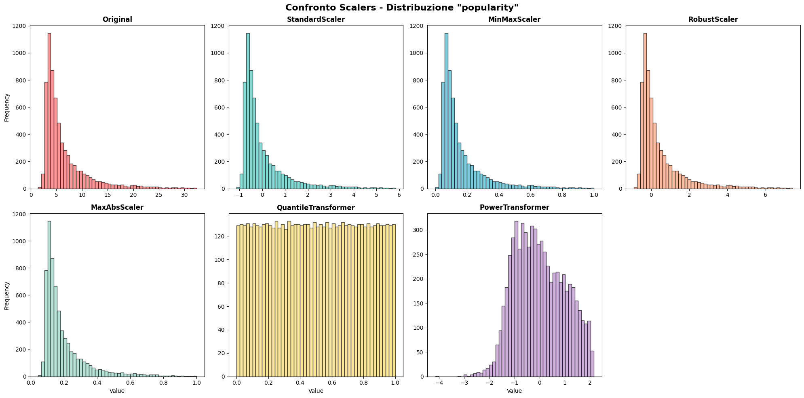
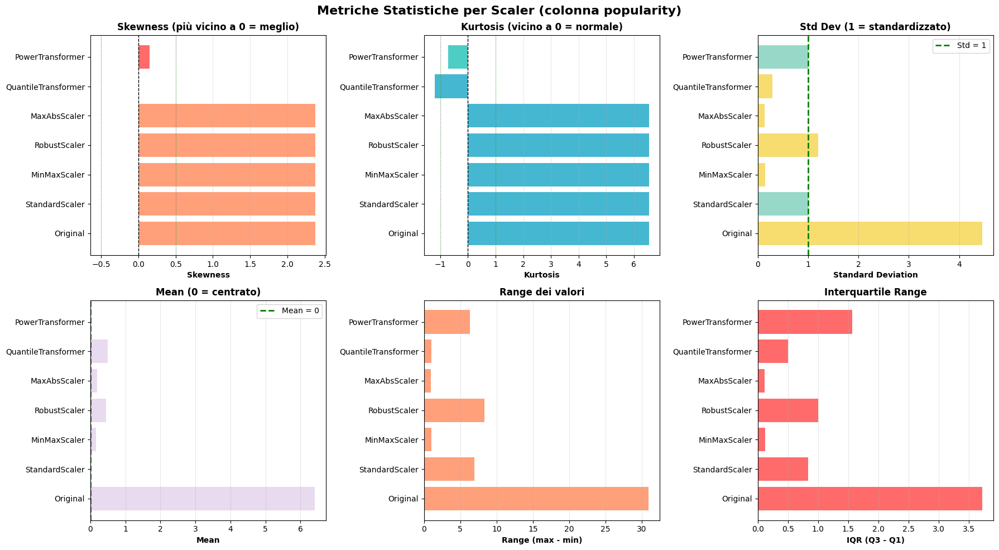
The initial dataset contained 10,000 TV shows with 16 features from TMDB. The exploration phase revealed several data quality issues and opportunities for feature engineering that would drive the preprocessing strategy.
The dataset included features such as adult content flag, backdrop and poster image paths, genre IDs, show identifiers, origin countries, original language, names, text overviews, popularity scores, air dates, and critically, the target variables vote_average and vote_count. Initial statistical analysis revealed significant class imbalance in the target variable, with ratings concentrated in the 6-8 range (1,830 shows rated 7, 2,095 rated 8), while extreme ratings were rare (only 19 shows rated 1, 46 rated 2).
Several columns were identified as non-predictive and removed. The 'adult' column contained only False values, making it uninformative. The 'backdrop_path' and 'poster_path' columns, while potentially useful for image-based models, were file paths without accessible image data. The 'original_name' and 'id' columns were identifiers that wouldn't generalize to prediction tasks.
Key transformations included extracting the year from 'first_air_date' to create a temporal feature, as release year could correlate with rating trends. The extensive genre information was consolidated through clustering (detailed in the Feature Engineering section). The 'original_language' field was mapped to five linguistic macro-areas (Europe, Africa, Papunesia, South America, North America) to reduce dimensionality while maintaining geographical-linguistic information. Similarly, 'origin_country' was mapped to six continents to create meaningful geographical groupings.
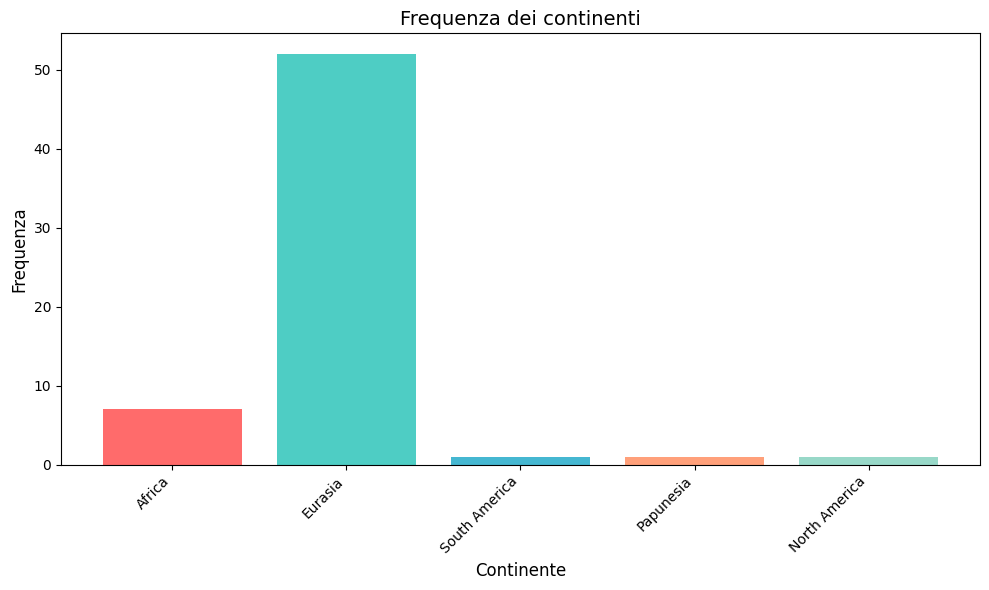
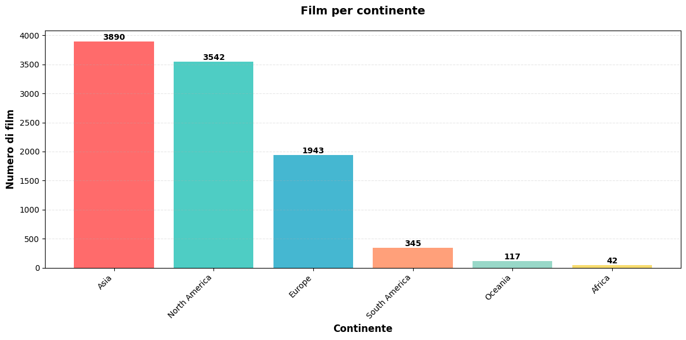
Duplicate records were removed to prevent data leakage and ensure model validity. The dataset was split into three sets following best practices: 70% for training (ensuring sufficient data for model learning), 10% for validation (for hyperparameter tuning and model selection), and 20% for final testing (for unbiased performance evaluation). This split was performed before any data-dependent preprocessing to prevent information leakage.
A comprehensive outlier detection strategy was implemented using an ensemble of 13 different methods. Statistical methods included Z-Score with multiple thresholds (3σ detecting 285 outliers, 2.5σ detecting 455), Modified Z-Score (2,187 outliers), and IQR with different k values (k=1.5: 1,597 outliers, k=2.0: 1,256 outliers). Machine learning methods included Isolation Forest at different contamination levels (1%, 5%, 10%), Local Outlier Factor with varying neighborhoods (n=20, n=50), K-Nearest Neighbors distance-based detection (k=5, k=10 at 95th percentile), and DBSCAN with different epsilon values.
Rather than relying on any single method, an ensemble voting approach was used. Each data point was evaluated by all 13 methods, and only those flagged as outliers by 9 or more methods (achieving over 50% consensus) were removed. This conservative approach identified 327 robust outliers (4.81% of the dataset). UMAP dimensionality reduction visualization confirmed these outliers formed distinct clusters separated from the main data distribution.
Six different scaling methods were evaluated on the training data: StandardScaler, MinMaxScaler, RobustScaler, MaxAbsScaler, QuantileTransformer, and PowerTransformer. Comparison metrics included skewness (measuring distribution asymmetry), kurtosis (measuring distribution tails), mean centering, standard deviation, and value range. StandardScaler emerged as optimal, achieving zero mean, unit standard deviation, and maintaining reasonable value ranges while preserving the original distribution shape better than aggressive transformations like PowerTransformer and QuantileTransformer.
The feature engineering phase transformed raw data into predictive features through sophisticated dimensionality reduction and domain knowledge application. The genre clustering exercise exemplified this approach.
The original dataset contained 35 distinct genre IDs, creating a high-dimensional sparse feature space if one-hot encoded directly. To address this, genre data was retrieved via the TMDB API to map numeric IDs to genre names including Reality, War & Politics, Sci-Fi & Fantasy, Comedy, Drama, Animation, Action, Soap, Talk, News, Crime, Horror, Thriller, Western, Mystery, Family, Kids, Adventure, Documentary, Music, Romance, and TV Movie.
Shows were represented in a genre feature space and dimensionality reduction techniques (PCA and UMAP) were applied to visualize genre relationships. Three clustering algorithms were systematically tested: K-Means (with k values from 3 to 7), Hierarchical Agglomerative Clustering (with ward linkage), and DBSCAN (with varying eps and min_samples parameters). Each configuration was evaluated using three complementary metrics: Silhouette Score (measuring cluster cohesion and separation), Davies-Bouldin Index (lower is better, measuring cluster compactness), and Calinski-Harabasz Index (measuring between-cluster to within-cluster variance ratio).
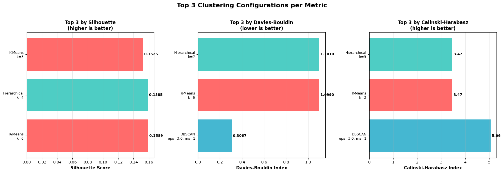
K-Means with k=6 emerged as optimal, balancing cluster quality metrics with the goal of dimensionality reduction. This created six genre clusters with frequencies: Cluster 0 (5,946 shows), Cluster 1 (5,358 shows), Cluster 2 (1,294 shows), Cluster 3 (518 shows), Cluster 4 (174 shows), and Cluster 5 (97 shows). These clusters represented natural genre groupings that preserved meaningful distinctions while dramatically reducing feature space from 35 to 6 dimensions.
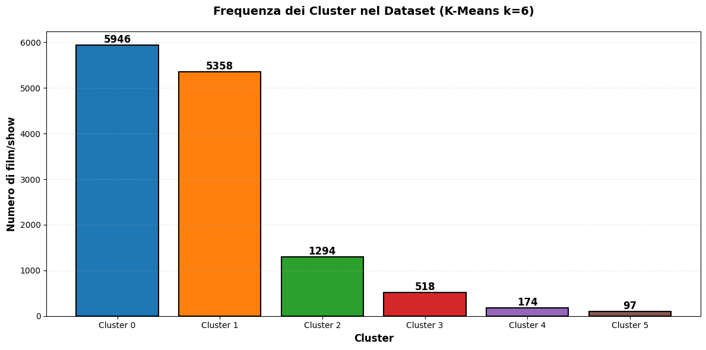
The 'original_language' field containing dozens of language codes was mapped to five linguistic macro-areas based on linguistic geography: European languages (dominant with 52+ languages), African languages, Papunesian languages, South American languages, and North American languages. This transformation reduced a high-cardinality categorical feature to a meaningful five-category grouping.
Similarly, the 'origin_country' field was mapped to continents to create geographic features. The distribution showed strong representation from Asia (3,890 shows), North America (3,542 shows), and Europe (1,943 shows), with smaller contributions from South America (345 shows), Oceania (117 shows), and Africa (42 shows). These geographic features could capture regional production quality differences, cultural preferences, and market dynamics affecting ratings.
After all transformations, the refined dataset contained: popularity (continuous), vote_count (continuous), year (continuous), genre clusters (6 binary features via one-hot encoding), continent (6 binary features), and language macro-area (5 binary features). This resulted in a total of 20 features (3 continuous + 17 binary), significantly reduced from the original high-dimensional sparse representation while retaining predictive information.
The model training phase employed systematic experimentation with multiple algorithms, extensive hyperparameter tuning, and rigorous evaluation protocols for both classification and regression tasks.
Eight classification algorithms were evaluated with comprehensive parameter grids. Tree-based ensemble methods included Random Forest (n_estimators: 100-300, max_depth: 10-None, min_samples_split: 2), Support Vector Machines (C: 0.1-10, kernel: RBF/linear, gamma: scale/auto), AdaBoost (n_estimators: 50-200, learning_rate: 0.01-1.0), Gradient Boosting (n_estimators: 100-200, learning_rate: 0.01-0.2, max_depth: 3-5), Logistic Regression (C: 0.01-10, penalty: l1/l2, solver: liblinear), LightGBM (n_estimators: 100-200, learning_rate: 0.01-0.1, num_leaves: 31-50, max_depth: -1), XGBoost (n_estimators: 100-200, learning_rate: 0.01-0.2, max_depth: 3-6), CatBoost (iterations: 100-300, learning_rate: 0.01-0.1, depth: 4-6), and Bernoulli Naive Bayes (alpha: 0.1-5.0, binarize: 0.0-0.5).
Initial training was performed on both balanced and unbalanced datasets with 5-fold cross-validation. Surprisingly, the unbalanced dataset yielded superior performance across most metrics. LightGBM achieved the best validation performance with 0.49 accuracy, 0.47 weighted precision, 0.49 weighted recall, 0.48 weighted F1-score, 0.29 balanced accuracy, and 0.79 ROC-AUC. The high ROC-AUC despite moderate accuracy indicated good class separation capability, while the lower balanced accuracy reflected challenges with minority classes.
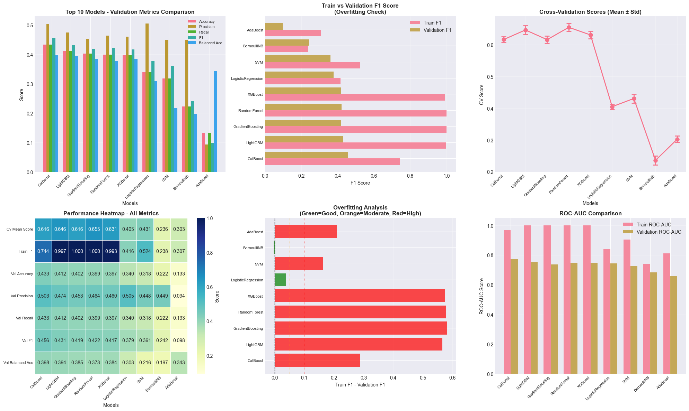
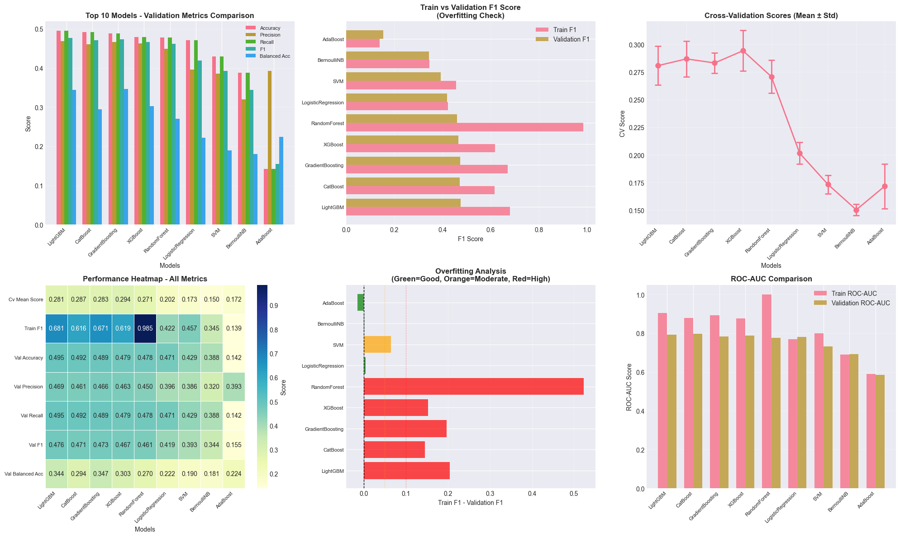
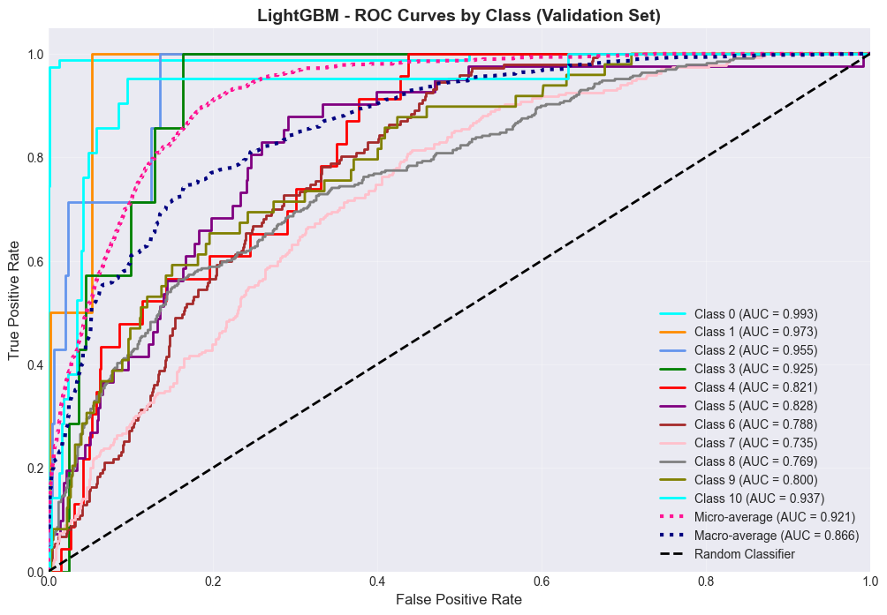
LightGBM was selected for intensive fine-tuning with an expanded parameter grid focusing on the most promising parameter ranges: n_estimators (200, 150, 250), learning_rate (0.01, 0.005, 0.015), num_leaves (50, 30, 70), and max_depth (-1, 10, 30). Cross-validation was increased to 10 folds for more robust performance estimation. The optimal configuration found was: n_estimators=250, learning_rate=0.015, num_leaves=70, max_depth=10.
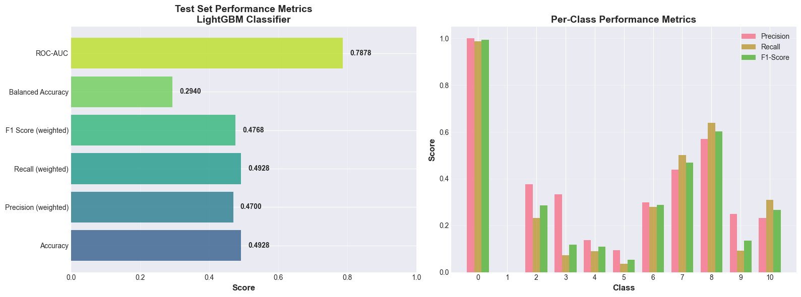
Nine regression algorithms were evaluated: Random Forest, SVR, AdaBoost, Gradient Boosting, Ridge, Lasso, ElasticNet, KNeighbors, LightGBM, XGBoost, and CatBoost. CatBoost emerged as the top performer with remarkable consistency across metrics: validation R² of 0.74, MAE of 0.74, RMSE of 1.12, MSE of 1.24, and MAPE of 11.65%.
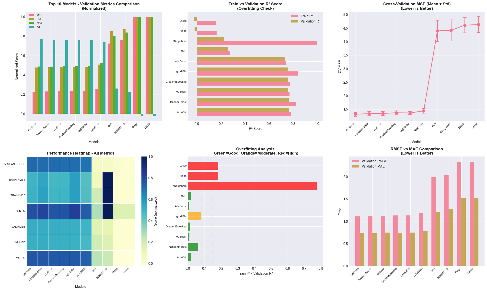
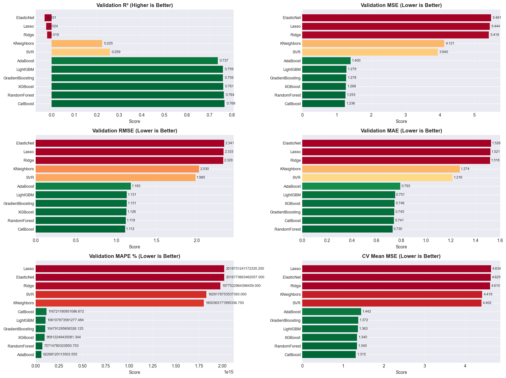
Fine-tuning CatBoost involved testing iterations (100, 70, 130), learning_rate (0.1, 0.05, 0.2), depth (6, 10, 14), and importantly, loss_function (RMSE vs MAPE). The comparison between initial and fine-tuned models showed: Initial model (CV Score: -1.32, Val MSE: 1.24, Val RMSE: 1.11, Val MAE: 0.74, Val R²: 0.77) vs Fine-Tuned model (CV Score: -1.30, Val MSE: 1.25, Val RMSE: 1.12, Val MAE: 0.74, Val R²: 0.77). The marginal improvement suggested the initial parameter selection was already near-optimal, validating the comprehensive grid search approach.
The use of stratified K-fold cross-validation (k=5 initially, k=10 for fine-tuning) ensured robust performance estimates by evaluating models across multiple train-validation splits. This approach helped detect overfitting and provided confidence intervals for performance metrics. The validation set served as a held-out set for final model selection, while the test set remained completely untouched until final evaluation to prevent optimization bias.
The final models demonstrated strong performance with distinct strengths for classification and regression tasks, validated on the held-out test set.
The final LightGBM classifier achieved test set performance of: Accuracy: 0.4928, Weighted Precision: 0.4700, Weighted Recall: 0.4928, Weighted F1-Score: 0.4768, Balanced Accuracy: 0.2940, and ROC-AUC: 0.7878. The near-50% accuracy for an 11-class problem (compared to 9% random baseline) represents meaningful predictive power. The high ROC-AUC of 0.79 indicated excellent ranking ability—the model was very good at ordering predictions by confidence.

Per-class analysis revealed performance patterns aligned with class frequency. Class 0 (lowest ratings) achieved perfect precision and recall (1.0) due to distinctive characteristics—these shows had clear markers of poor quality. Classes 7-8 (most frequent with 1,830 and 2,095 samples) showed moderate performance with F1-scores around 0.6-0.65. Minority classes (1-5, 9-10) had lower recall, often misclassified into adjacent rating categories, highlighting the challenge of learning decision boundaries with limited examples.
The final CatBoost regressor demonstrated excellent performance on the test set: MSE: 1.9811, RMSE: 1.4075, MAE: 0.8673, R²: 0.6301, MAPE: 16.71%. The R² of 0.63 indicated the model explained 63% of rating variance, a strong result given the subjective nature of ratings and the limited feature set. The RMSE of 1.41 meant predictions were typically within 1.4 rating points of actual values. The MAE of 0.87 and MAPE of 16.71% provided intuitive interpretability—on average, predictions were off by less than one rating point or about 17% of the actual value.
Comprehensive residual analysis revealed model behavior patterns. The residual plot showed relatively uniform variance across predicted values, suggesting homoscedastic errors. However, slight heteroscedasticity was visible at rating extremes (0-2 and 9-10), where predictions tended to regress toward the mean. The residual distribution was approximately normal with near-zero mean, validating regression assumptions. The Q-Q plot showed good alignment with theoretical normal distribution in the central region but heavier tails, indicating occasional larger prediction errors for unusual shows.
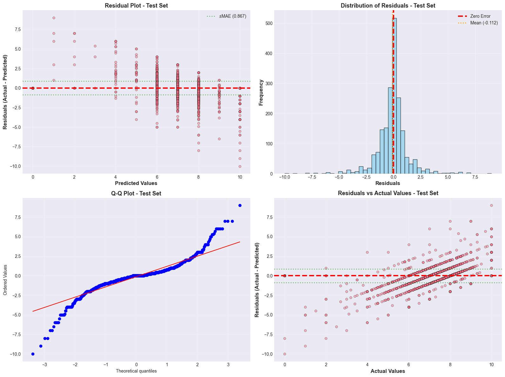
The residuals vs actual values plot revealed systematic patterns. For shows with actual ratings 7-8 (the majority), residuals were tightly clustered around zero, indicating accurate predictions. For extreme ratings (0-2, 9-10), residuals showed more spread and slight bias, with the model under-predicting high ratings and over-predicting low ratings—a common regression-to-mean effect when training data is imbalanced.
CatBoost's feature importance analysis revealed 'vote_count' as overwhelmingly dominant for regression, accounting for approximately 80% of aggregated importance. This makes intuitive sense—polarizing shows (whether extremely good or bad) generate more discussion and reviews. The remaining features contributed more modestly: genre_cluster (5-10%), continent (3-7%), year (3-5%), popularity (2-4%), and lang_macroarea (2-4%). This distribution suggests that while metadata features provide signal, engagement metrics (vote_count) are the strongest predictors of ratings.
For classification, feature importance was more distributed, with vote_count still leading but genre clusters, continental origins, and linguistic macro-areas playing more substantial roles. This likely reflects that classification decision boundaries depend more on multiple feature interactions to distinguish adjacent rating categories.
An additional exploration investigated whether textual features (show names and overviews) could predict ratings, implementing both traditional machine learning and modern transformer-based approaches.
Text preprocessing involved combining 'name' and 'overview' fields into a single document per show. TF-IDF vectorization was applied with parameter grids testing max_features (5000, 10000) and n-gram ranges ((1,1) for unigrams, (1,2) for unigrams+bigrams). Three classifiers were evaluated: Logistic Regression (C: 0.1-10.0, penalty: l1/l2, solver: liblinear), Naive Bayes (alpha: 0.1-1.0), and Random Forest (n_estimators: 100-200, max_depth: 10-20, max_features: 5000).
Random Forest achieved the best performance among traditional methods: Test Accuracy: 0.3851, Precision: 0.3276, Recall: 0.3851, F1-Score: 0.2740. While lower than tabular feature models, this demonstrated that textual content carries predictive signal about ratings. Genre keywords in overviews and title sentiment likely contributed to these predictions.
DistilBERT, a distilled version of BERT optimized for efficiency, was fine-tuned for sequence classification. The model 'distilbert-base-uncased' was loaded from HuggingFace with 11 output classes (ratings 0-10). Text preprocessing involved tokenization with a maximum sequence length of 128 tokens, truncation, and padding. Training used AdamW optimizer with a learning rate of 2e-5, batch size of 16, and 3 epochs on the training set.
DistilBERT achieved test performance of: Accuracy: 0.4169, Precision: 0.3251, Recall: 0.4169, F1-Score: 0.3802. This improvement over traditional ML (0.42 vs 0.39 accuracy) validated the benefit of pre-trained language representations. The model captured semantic relationships and contextual information that bag-of-words TF-IDF missed.
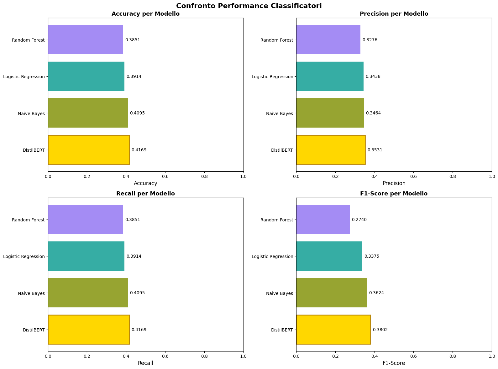
Detailed analysis of DistilBERT predictions revealed significant limitations. The model predominantly predicted classes 7-8 (1,600+ predictions for class 8 alone), essentially learning to predict the majority classes while largely ignoring minority classes. This occurred despite class imbalance being less severe for text data (SMOTE wasn't applied). The true value distribution showed peaks at ratings 6-8, while predictions formed a narrower peak at rating 8.
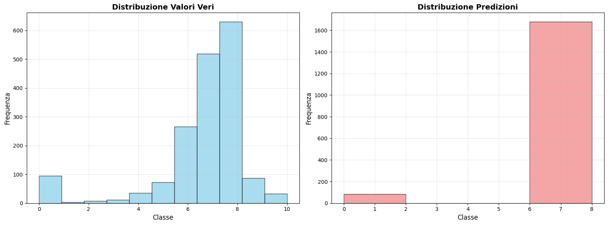
This behavior suggests several factors: insufficient training epochs for the model to learn minority class patterns, the inherent difficulty of predicting extreme ratings from text alone (extreme ratings may depend more on subjective preferences or execution quality not captured in descriptions), and the potential need for class-weighted loss functions or oversampling techniques adapted for deep learning. More extensive hyperparameter tuning, longer training with early stopping, and augmentation techniques specific to NLP (back-translation, paraphrasing) might improve minority class performance.
Despite limitations, the text-based approach demonstrated that content descriptions contain predictive information about ratings, complementary to the metadata features. An ensemble combining tabular features with text embeddings could potentially outperform either approach alone.
To understand how the best-performing classifier made decisions, explainable AI techniques were applied. For each target class (0-10) present in the test set, the median sample (by feature values) was identified as representative, and both LIME and SHAP were used to explain that prediction.
LIME works by fitting interpretable linear models locally around individual predictions. For each class centroid, LIME identified the most influential features and their contribution directions (positive or negative) toward predicting that class. A tabular explainer was configured with the training data, feature names, and class names, generating explanations showing feature contributions as bar charts.
For Class 0 (worst ratings), LIME revealed: continent_Europe contributed +7.77 (the strongest positive predictor), suggesting European shows in the dataset were more likely to receive the lowest ratings. This could reflect sampling bias or cultural differences in rating behaviors. Negative contributions came from lang_macroarea_Papunesia (-2.64), lang_macroarea_South America (-2.24), and lang_macroarea_North America (-2.01), indicating shows from these linguistic regions were less likely to be rated 0. Interestingly, continent_North America provided a moderate positive contribution (+1.49), creating a nuanced picture where North American shows (by geography) were somewhat likely to be rated 0, but shows in North American languages were less likely.
For Class 10 (highest ratings), LIME showed: vote_count was by far the dominant positive predictor, as expected from feature importance analysis. Lang_macroarea_Africa (-1.00) and continent_South America (-0.80) contributed negatively, suggesting shows from these regions were less represented in the top-rated category. Multiple genre clusters (genre_cluster_3, genre_cluster_2) and geographic features (continent_Oceania, lang_macroarea_Papunesia) showed smaller positive contributions, indicating diverse content could achieve top ratings. The spread of contributing features for class 10 contrasted with class 0's strong concentration on geographic origin, suggesting that achieving top ratings required multiple factors aligning favorably.
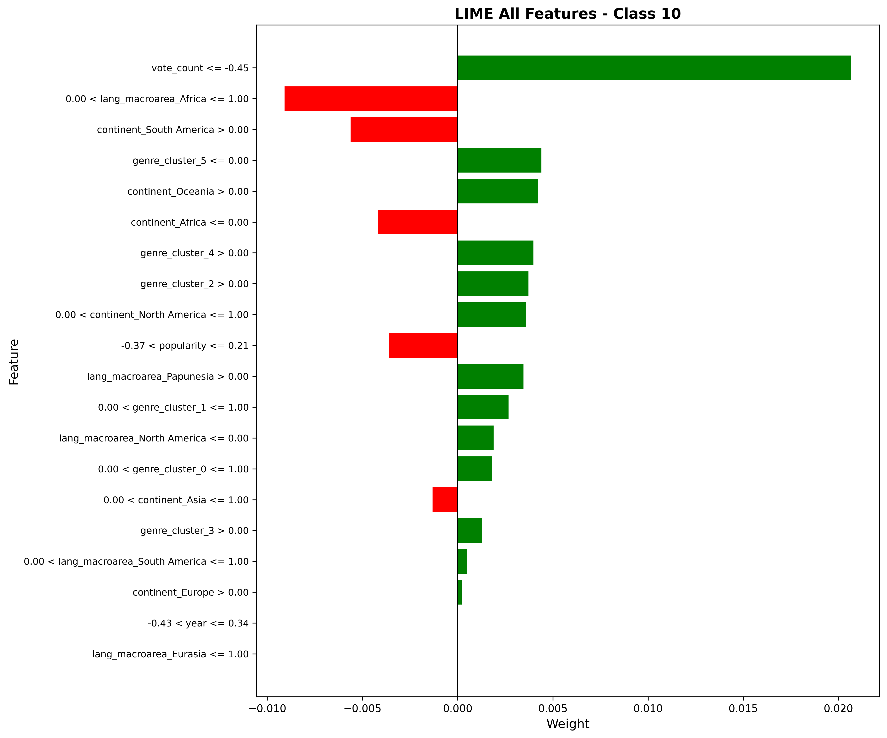
SHAP values, grounded in game theory, provide a unified measure of feature importance by considering all possible feature combinations. A TreeExplainer was initialized with the trained LightGBM model, computing SHAP values for test set samples. Waterfall plots visualized how features pushed predictions away from the base value (average model output) toward the final prediction.
For Class 0, SHAP's waterfall plot showed the base value (expected model output across all samples) starting at -3.459. The continent_Europe feature contributed +7.77, moving the prediction significantly toward class 0. This massive contribution explained the very high predicted probability (0.9940) for this class. Subsequent features like lang_macroarea_Papunesia (value 0.07, contribution -2.64) and lang_macroarea_South America (value 0.102, contribution -2.24) pulled back slightly, but not enough to overcome the European origin signal.
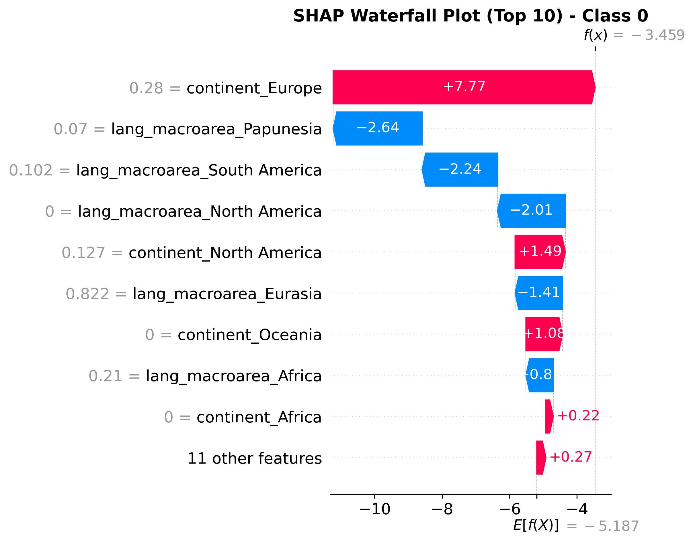
The SHAP analysis confirmed LIME's findings while providing magnitude perspective. The E[f(X)] = -5.187 base value represented the average log-odds prediction before considering specific features. For the class 0 centroid, features pushed this to f(x) = -3.459, resulting in extremely high confidence for predicting the lowest rating. This quantitative framework revealed not just which features mattered, but precisely how much they shifted predictions.
Several key insights emerged from the explainability analysis. First, geographic and linguistic features played surprisingly strong roles for extreme ratings (classes 0 and 10), suggesting systematic differences in how shows from different regions are rated or which regional content appears in this dataset. The vote_count feature's dominance in class 10 predictions confirmed that engagement and polarization are closely tied—shows with many ratings tend to be highly rated (possibly due to selection bias where only popular shows accumulate many ratings).
The model learned nuanced interactions between features. For instance, continent and language macro-area sometimes provided opposing signals (North American geography vs North American languages), indicating the model distinguished between production location and linguistic content markets. Genre clusters showed more uniform but smaller contributions across classes, suggesting genre was a modifying factor rather than a primary determinant of ratings.
The explanations validated that the model was learning meaningful patterns rather than spurious correlations. The identified relationships (European content → lower ratings, high engagement → higher ratings, diverse features → top ratings) were interpretable and aligned with domain knowledge about global television markets and rating dynamics. This transparency is crucial for deploying ML systems in real-world applications where stakeholders need to trust and understand model decisions.
This comprehensive machine learning project successfully addressed the challenge of predicting TV show ratings through both classification and regression frameworks. The final models achieved strong performance: LightGBM classifier with 0.79 ROC-AUC and CatBoost regressor with 0.63 R² and 16.71% MAPE. These results demonstrate that show metadata and engagement metrics contain substantial predictive signal about viewer ratings.
The project validated several important ML principles. Feature engineering, including custom genre clustering and geographic-linguistic mapping, proved essential for model performance. The outlier detection ensemble method and careful scaling approach exemplified best practices in data preprocessing. Systematic hyperparameter tuning with appropriate cross-validation prevented overfitting while maximizing performance. The comparison of balanced vs unbalanced training data revealed that real-world performance sometimes contradicts common wisdom about class balancing.
The explainability analysis using LIME and SHAP provided critical insights into model decision-making, revealing that vote_count (engagement) was the strongest predictor for high ratings, while geographic and linguistic features strongly influenced extreme ratings. This transparency makes the models more trustworthy and deployable in production environments.
Several avenues could improve model performance. Incorporating additional features like cast/crew information, network/production company, episode count, season structure, or viewer demographic data could provide richer context. Temporal features beyond release year, such as trends in ratings over time or seasonal patterns, might capture evolving viewer preferences. More sophisticated text analysis using full DistilBERT embeddings (not just fine-tuned predictions) could be combined with tabular features in an ensemble model.
For the classification task, addressing class imbalance through more advanced techniques like focal loss, cost-sensitive learning, or class-weighted training could improve minority class performance. The regression task might benefit from ensemble methods combining CatBoost with other top performers like LightGBM or XGBoost through stacking or blending.
It's worth noting that despite the comprehensive scope of this project—from data preprocessing through advanced explainability analysis, all work was completed in just 5 days (December 26-31, 2024) to meet the self-imposed deadline of delivering before New Year's Eve. This rapid development timeline, documented in the GitHub repository's commit history, demonstrates the ability to execute end-to-end machine learning workflows efficiently under time constraints while maintaining quality and rigor in methodology.